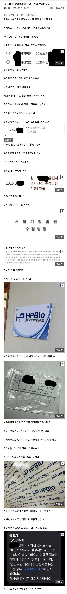

빌리진 이스 낫마 러버
쉬스 저스터 어 걸 후 클레임스 뎃 아엠더원
벗 더 킫 이스 낫 마 썬 (히 - 히)
아돌프 히 - 틀러
그 노래를 벳남어로 불러야함
우주 갓띵곡
호우!!
몇몇 커뮤에서 해외에는 다 여신, 선녀만 사는줄 아는 줄 알고 국제결혼 외치던 시절도 이젠 다 갔나보네 ㅋㅋㅋ 어느 나라를 가든 사람 사는거 다 똑같다 특히 응우옌의 나라는 말할 거도 없음 국제결혼사기로 자살하거나 성병걸리는 이야기 보면 여우 피하려다 호랑이 만난 격.
벹남 여자랑 어케 연애하지..생각조차안들던데
내 대학 동기는 했더라 ㅋㅋㅋ 근데 지도 지가 한국 여자랑은 결혼 못할 급인거 알고 있어서 그런거 같음 ㅋㅋㅋ
내가 공익 생활을 다문화가족 지원센터에서 했는데, 인물 좋은 베트남 여자들은 솔직히 예쁘긴 하다.
북베트남 사람들은 한국인이랑 구분이 안가는 사람들도 많더라
장윤기는 합니다
사랑에 국적 인종이 어딨어~
하니급이면 가능함
그중에 이쁜애들도 있긴해
한동안 이쁘다고 난리던 팜하니도 부모가 모두 베트남사람임
정치적문제로 어쩌구였던거 같긴한데 여튼
마리아냐
연애 시작이 궁금하네 이혼까지 뭔일이 있었는지도
저정도면 각잡고 작업친거 아님?
국결할거면 영어 공부하고
영어하는 여자 만나면 됨
모국어 아니더라도 영어 잘하는 여자면
동남아 출신이더라도 중산층 이상일 가능성이 높다
영어관련 전공 제외
최소한 본인한테 영어는 남으니 손해볼게 없고
연애부터 결혼까지 소통 안돼서 문제 생길 여지는 거의 없어진다
필리핀 미얀마 하층민도 영어 잘해 ㅋㅋ
근데 하층민 영어(필리핀, 인도) 배우면 서방국가에서 개무시 당함… 비즈니스에서 영어가 중요한 사람이면 오히려 마이너스임. 특유의 그 문체나 억양이 있다하더라.
헬로우 써 유 올레디 피니시?
노니드
국결 잘 모르는데 결혼 할꺼면 탈북자가 베스트이지 않음?
이쪽은 적응하면 그냥 한국사람이랑 하는거잖아..
뭐 결혼상대 찾아 침투해서 요인 식별 후 납치 탈출까지 하는거임? 이미 탈북하신분들을 만나기엔 모수가 적어서 그냥 아무 한국태생 여자만나는게 더 빠르겠다..
아니 나는 남남북녀 결혼회사도 많길래 말한거임…차라리 돈주고 결혼할꺼면 그나마 가까운 사람들이랑 하면 좋지 않나 해서..
전화 해봐라 ㅋㅋㅋ 처녀 있다 말하면 쌩구라다
탈북녀들 마인드 개썅년들이 대부분임
나는 탈북녀 하면 싹싹하다는 이미지 였는데 아닌가보네
ㅋㅋ 보통 악착같이 사는 사람들이 성격 배리는경우 많잖아. 하물며 북한출신은 어떻겠어
탈북자가 그린 만화에서는 거의 갓갓녀로 나와서 그런가보다 했는데 니말 들어보니 그것도 아닌가보네
생존을 위해 무슨 짓이던 함 > (탈북 이후) 이득을 위해 무슨 짓이던 (주로 창녀+꽃뱀) 하는 개썅년으로 진화 하는게 대부분
스탑럴커에 비할바 못되는 폭탄 매물이네
인페스티드 테란임 ㅇㅇ
나 전에 살던 집 옆집이 탈북자들이었는데 남자는 젠틀한데 여자가 씨발 진짜 미친년이었음
ㄴㄴ 환상버려 진짜 기 억세다
한국 사람일 수 있을 리 없지만, 국결을 하려는데 왜 그냥 한국사람이랑 하라는게 좋다고 생각하는건지 모르겠네.
차라리 몽골인이 낫지 않을까
우선 요즘 탈북은 탈북녀가 중국인이랑 결혼 하는걸로 우선 탈북을 하고 중국인에게 돈을 (보통 500만 정도 걸어둠) 계약금 조로 주고 신혼여행 인척 동남아 국가로 가서 새터민 된후 지원금으로 갚는 루트 (안 갚으면 북한에 있는 가족 친지들 ㅈ된다.) 인데 이것도 태국 캄보디아 ㅈㄹ 난뒤 어려워짐.
그러다보니 돌싱 (서류상 이던 아니던) + 용돈 개념이 아니라 거의 처가를 다 책임져야됨. 해서 점점 힘들어 지는중
(새터민 전형으로 오신분과 결혼한분 이야기 이니 방송보단 신빙성 있다고 판단)
내친구가 이번에 마흔에 벹남 스무살이랑 결혼함
미래가 궁금하다
돈 잘벌고 대머리 아니면 괜춘할듯
본가가 시골인데 동네에 매매혼으로 온 젊은 동남아 여자들 몇있는데 대부분 젊어서 애 잘 낳고 자기 부모 형제 식구들 차례차례 한국으로 부름 그럼 걔들은 한국서 몇년 미친듯이 바짝벌어서 본국돌아가서 떵떵거리며 삶 딸 한명 희생해서 온 식구가 먹고사는거지
도태됐으면 그냥 그렇게 좀 뒤져라
아득바득 살려고 하지말고 좀
그렇게까지 역겹진 않은데 뭔가뭔가긴함
검사안받으면 유치장가?
써져있네 최대 30일 감치
봤는데 놀라워서
연애혼인데도 안타깝네
걍 결혼 상대는 잘 보고 골라야함. 이거 고금동서 남녀가 모두 마찬가지인거지. 그게 솔직히 자꾸 커뮤에서는 물질적인걸 강조하는데, 개인적으로 제일 중요한게 가치관이랑 태도가 중요한 것 같음.
국결이어도 가치관이랑 태도가 잘 맞으면 서로 문제가 없고 한국인끼리 결혼해도 가치관이랑 태도가 잘 안맞으면 문제 많아짐.
근데 같은 한국인끼리는 가치관이 맞을 확률이 엄청 높음.
나도 국결했는데 가치관이 좀 안맞을 때가 있는데 우리는 서로 대화를 많이하고 타협을 많이 하기 때문에 서로 태도가 좋아서 한 번도 안싸움, 뭔가 아니다 싶으면 서로 터놓고 얘기하는데 가치관이 다르다란걸 전재하고 그걸 받아줄걸 서로가 아니까 그럼. 그리고 둘이 가치관이 통하는 부분에 대해서는 시너지가 좋고.
근데 확실히 내가 한국인이다 보니까 현지에서 이해 못하는 상황들이 좀 많음. 내가 봤을 땐 별거 아닌것같은데 이나라 사람들한테 큰 일이고, 저 정도면 그냥 장난치는거 아닌가? 해도 보면 엄청 싸운거고 그럴 때가 있음.
ㄹㅇ 자식도 불쌍함...하더라도 우크라이나나 러시아로 눈을 돌려야지...내자식이 뚕남아혼혈이라니 못할짓임